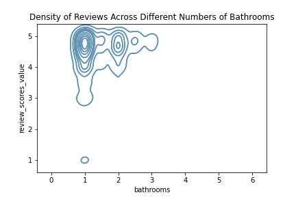

Introduction
Boston is a destination for many travelers. With a diverse set of cultural, sporting and educational opportunities, many people find themselves traveling to Boston. This is especially evident around city events like the Boston Marathon and the St. Patrick’s Day Parade, but is a reality year round. With so many visitors, it can be expensive and difficult to get a hotel room that is centrally located. For this reason, some visitors choose to stay in Airbnbs, which are short term rentals managed by individual hosts. With so many Airbnb listings in the city, it can be difficult for hosts to isolate what characteristics make a successful listing and visitors may be overwhelmed by the number of options. It is important to understand where ratings come from and what could skew them over-time because there has been evidence of rating inflation on Airbnb as seen by the distribution histogram below [1]. If everyone receives above 3 stars, users need to know where else to look to determine the quality of a listing [2].
The data set used in the following analysis comes from Inside Airbnb, an organization that provides data and advocacy about Airbnbs impact on residential areas. Inside Airbnb has a variety of data sets, including one of just listings in Boston. This data set has 4,205 entries with 75 attributes, including both categorical and continuous columns. The dataset has robust amounts of data about rankings — beyond the overall ranking category it also lists out host ratings, and neighborhood ranking. It also has qualitative information like listing descriptions and neighborhood characteristics. There is information about how many listings a particular host handles, and their typical response time.
Through data analysis we hope to clear up any confusion for both hosts and visitors. We will do this by addressing a number of tasks: what is the overall distribution of the data, how does neighborhood impact ratings in aggregate and what are consistent qualities of good ratings. These three tasks work in tandem to illuminate the Airbnb market in Boston.
Citations:
[1] Teubner, T., & Glaser, F. (2018). Up or out - The dynamics of star rating scores on Airbnb. 96.
[2] Bridges, J., & Vásquez, C. (2016). If nearly all Airbnb reviews are positive, does that make them meaningless? Current Issues in Tourism, 21(18), 2065–2083. https://doi.org/10.1080/13683500.2016.1267113
Rating Distribution Histogram
This histogram allows viewers to explore the data at a very high level. It displays the overall data by illustrating the frequency of ratings of Airbnbs in Boston. It is very clearly skewed to the left, alluding to the oversaturation of good ratings in the area. One takeaway from this visualization is that the vast majority of Airbnbs in Boston are ranked more than 4 on a scale of 5. It is interesting to note, however, that very few listings achieve the coveted 5 star rating. This sort of environment can make it difficult for Airbnb owners to differentiate themselves and present challenges for visitors when trying to pick the right listing for them. This visualization addresses the task of identifying the distribution of the data.
This histogram employs the classic design of histograms and keeps it simple. It was made using D3 and employs bars as the marks. The channel is the location of the bars. The x axis shows the rating and the y axis the frequency of that rating. The scale on the x axis ranges from 1.0 to 5.0, showing the entire range of ratings in the data set.
Bathrooms Correlation

This topographical distribution provides insight into the relationship between the number of bathrooms and the overall ratings. The more layers there are on the graph, the higher the density of listings with that number of bathrooms and that ranking. The main takeaway from this graph is that having more than one bathroom is optimal. There is a much wider spread of rankings on properties that only have one bathroom compared to properties with more than one bathroom. It is important to acknowledge that there are simply more listings with one bathroom than with multiple, which partially contributes to the spread of rankings but does not take away from the higher rankings that properties with multiple bathrooms have. This visualization addresses the task of identifying characteristics that earn listings a higher rating and can be helpful to new hosts looking to break into the market.
This visualization, made using Seaborn, employs a topographical encoding to show the density of reviews against a specific attribute. The marks are the lines and the channel is the position of the lines. The more layers (or concentric shapes) there are, the higher the density of data at that point. For example, there are a lot of listings with one bathroom that receive ratings just below 5, leading to the nested shapes. In this visualization the overall review is the y axis and the number of bathrooms is the x axis. This topographical representation is less common than some visualizations, but due to the high number of data points, something like a scatter plot would be too crowded and confusing to interpret.
Neighborhood Ratings Boxplot
This static comparative boxplot visualization provides the user with information not only about the relative average ratings of different neighborhoods but also the spread of ratings. The outliers are marked with dots whereas the averages and quartiles are marked by boxes. While a user could initially rank neighborhoods based on simply average rating, that is not the full story, because some neighborhoods are not consistent in ratings. One of the main takeaways is that for a host or traveler, Longwood Medical may be the most reliable, well-rated area to aim for. It addresses the task of diving into the distribution of ratings by breaking down the distribution on a neighborhood by neighborhood basis.
The comparative boxplot visualization combines a lot of detailed information into one simple plot. The marks in this visualization are the points, bars and lines and the channel is the position of those marks. This allows the visualization to explore each neighborhood individually while also encouraging comparison. The neighborhoods are on the x axis because this allows for easy visual comparison. The y axis is the rating, so the boxplots show the overall spread of ratings. This type of visualization is helpful to illustrate several statistical facets of the data at once. This comparative boxplot was made using the Plotly Express library in python, with the boxplot feature, that requires a dataframe and column names.
Interactive Neighborhood Map